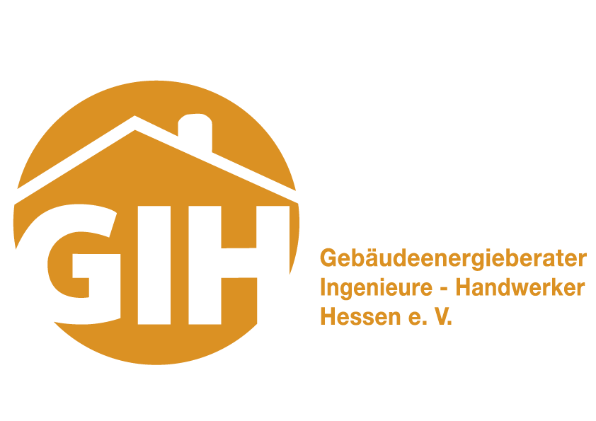

Energieausweis
Individuell, fachgerecht und auf Ihre Anforderungen abgestimmt.
Energieberatung
Kompetenz, persönliche Beratung und verlässliche Umsetzung.

01 / Profil
Wir verbinden fundierte Fachkompetenz mit persönlicher Betreuung und einem klaren Blick für die Anforderungen unserer Kundinnen und Kunden.
02 / Leistungen
Individuell, fachgerecht und auf Ihre Anforderungen abgestimmt.
03 / Vertrauen
04 / Team
Dipl.-Ing.
Ablauf
Wir klären Ziel, Rahmen und Ausgangslage.
Wir übersetzen Anforderungen in eine klare Lösung.
Wir realisieren strukturiert, transparent und zuverlässig.
FAQ
Mit einem unverbindlichen Gespräch und einer klaren Einordnung Ihres Anliegens.
So viel wie nötig, so wenig wie möglich. Fehlende Punkte klären wir gemeinsam.
Leistungen, nächste Schritte und Zuständigkeiten werden von Anfang an verständlich benannt.
Nachweis
Kontakt
Schildern Sie uns kurz Ihr Anliegen. Wir melden uns persönlich bei Ihnen.